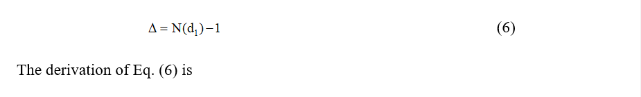
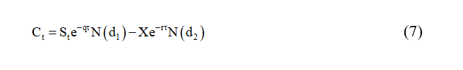
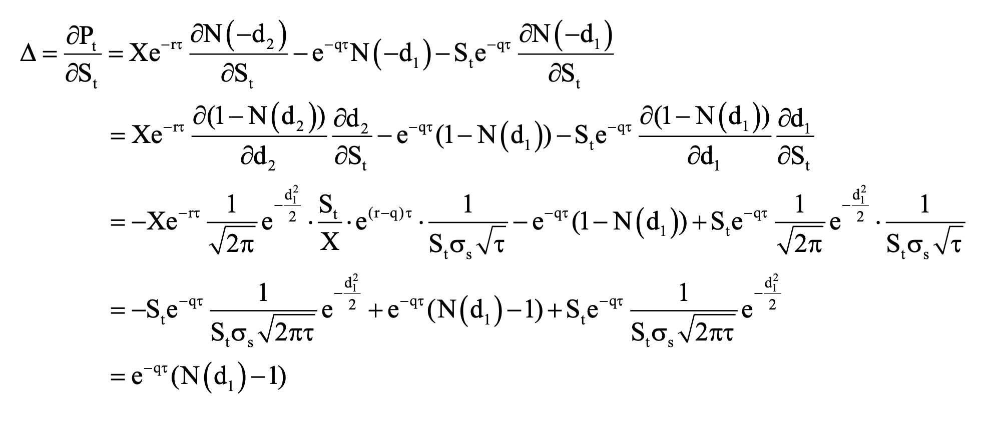

GREEKS
Derivations and Applications of Greeks in Option Derivatives
Abstract
In this article, we introduce the definitions of Greek letters. We also provide the derivations of Greek letters for call and put options on both dividends-paying stock and non-dividends stock. Then we discuss some applications of Greek letters. Finally, we show the relationship between Greek letters, one of the examples can be seen from the Black-Scholes partial differential equation as already derived before.
Keywords
Greek letters, Delta, Theta, Gamma, Vega, Rho, Black-Scholes option pricing model, Black-Scholes partial differential equation.
Introduction
“Greek letters” are defined as the sensitivities of the option price to a single-unit change in the value of either a state variable or a parameter. Such sensitivities can represent the different dimensions to the risk in an option. Financial institutions who sell option to their clients can manage their risk by Greek letters analysis.
In this chapter, we will discuss the definitions and derivations of Greek letters. We also specifically derive Greek letters for call (put) options on non-dividend stock and dividends-paying stock. Some examples are provided to explain the application of Greek letters. Finally, we will describe the relationship between Greek letters and the implication in delta neutral portfolio.
Delta(Δ)
The delta of an option,Δ , is defined as the rate of change of the option price respected to the rate of change of underlying asset price:
Derivation of Delta for Different Kinds of Stock Options
From Black-Scholes option pricing model, we know the price of call option on a non-dividend stock can be written as:
and the price of put option on a non-dividend stock can be written as:
where
N(.) is the cumulative density function of normal distribution.
First,we calculate
Eq. (2) and Eq. (3) will be used repetitively in determining following Greek letters when the underlying asset is a non-dividend paying stock.
For a European call option on a non-dividend stock, delta can be shown as


For a European put option on a non-dividend stock, delta can be shown as

If the underlying asset is a dividend-paying stock providing a dividend yield at rate q, Black-Scholes formulas for the prices of a European call option on a dividend-paying stock and a European put option on a dividend-paying stock are

and
where
To make the following derivations more easily, we calculate Eq. (9) and Eq. (10) in advance.
)
For a European call option on a dividend-paying stock, delta can be shown as

The derivation of (11) is
For a European call option on a dividend-paying stock, delta can be shown as
The derivation of (12) is

Application of Delta
Figure 1 shows the relationship between the price of a call option and the price of its underlying asset. The delta of this call option is the slope of the line at the point of A corresponding to current price of the underlying asset.

Figure 1
By calculating delta ratio, a financial institution that sells option to a client can make a delta neutral position to hedge the risk of changes of the underlying asset price. Suppose that the current stock price is $100, the call option price on stock is $10, and the current delta of the call option is 0.4. A financial institution sold 10 call option to its client, so that the client has right to buy 1,000 shares at time to maturity. To construct a delta hedge position, the financial institution should buy 0.4 x 1,000 = 400 shares of stock. If the stock price goes up to $1, the option price will go up by $0.4. In this situation, the financial institution has a $400 ($1 x 400 shares) gain in its stock position, and a $400 ($0.4 x 1,000 shares) loss in its option position. The total payoff of the financial institution is zero. On the other hand, if the stock price goes down by $1, the option price will go down by $0.4. The total payoff of the financial institution is also zero.
However, the relationship between option price and stock price is not linear, so delta changes over different stock price. If an investor wants to remain his portfolio in delta neutral, he should adjust his hedged ratio periodically. The more frequently adjustment he does, the better delta-hedging he gets.
Figure 2 exhibits the change in delta affects the delta-hedges. If the underlying stock has a price equal to $20, then the investor who uses only delta as risk measure will consider that his portfolio has no risk. However, as the underlying stock prices changes, either up or down, the delta changes as well and thus he will have to use different delta hedging. Delta measure can be combined with other risk measures to yield better risk measurement. We will discuss it further in the following sections.
Figure 2